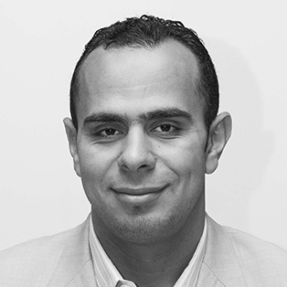

I'm a research scientist and Director of Industry Programs at Stanford HAI, leading impactful applied AI/ML research collaborations with industry affiliates from different verticals. My work focuses on uncertainty quantification for scientific machine learning and on AI trust, safety, and responsible development. Previously at Sandia National Laboratories, Northrop Grumman, UC Davis, the Oden Institute at UT Austin, and Cisco. Ph.D., ECE, UC Davis; M.S./B.S., Cairo University.